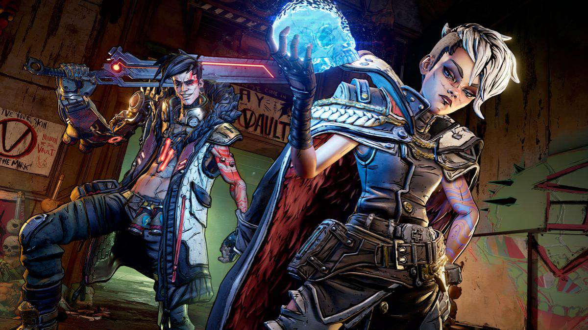

WHY IS BORDERLANDS 3?
Borderlands 3 has a ton of unique guns with amazing effects and damage. The movement feels modernized, and the animations are great. The game also has superb endgame content. The multiplayer aspect is seamless, and players can easily find games and leave if not having fun. Borderlands is an action role-playing first-person shooter franchise created by Gearbox Software and published by 2K. The series has since become synonymous with the term 'looter shooter' because of how refined and addicting its loot-driven multiplayer co-op gameplay is.